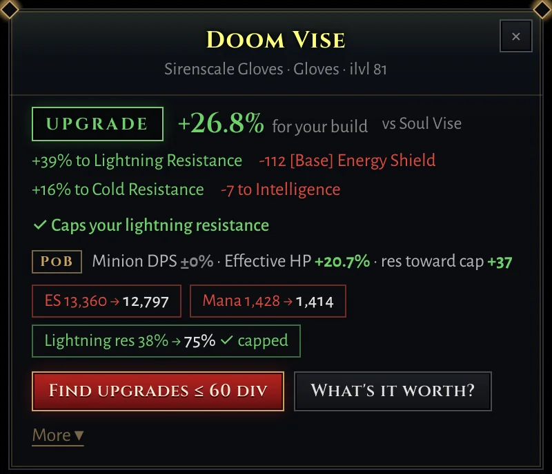
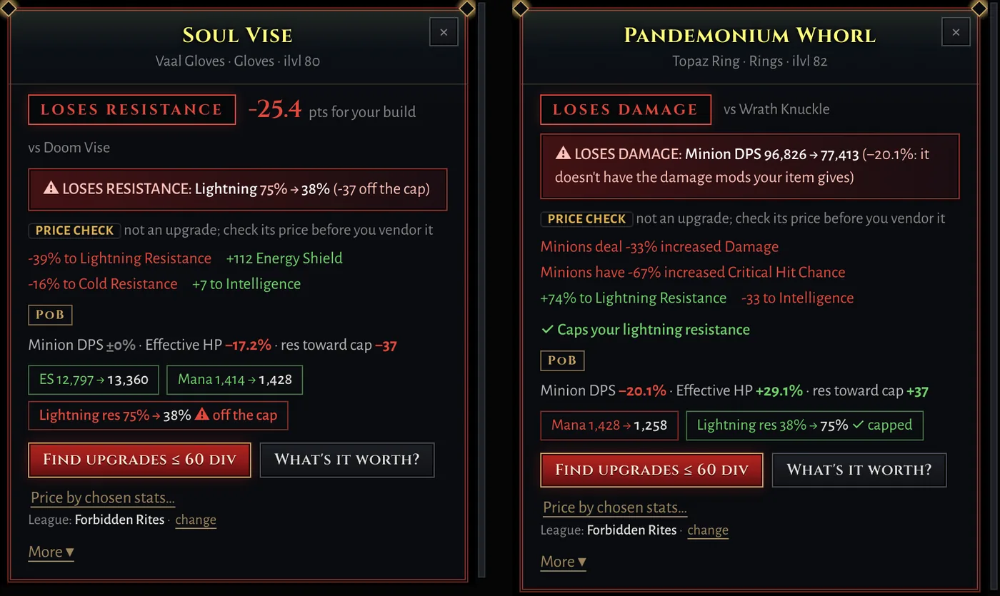
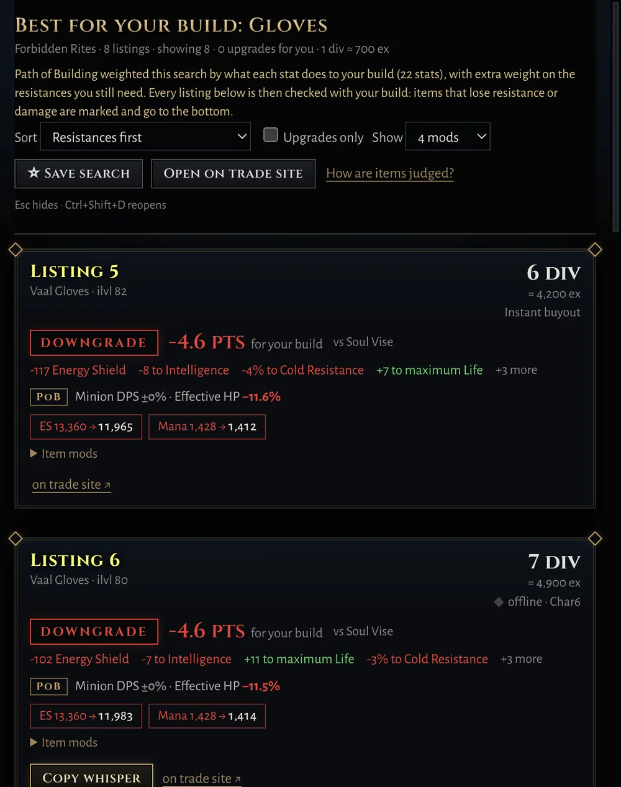
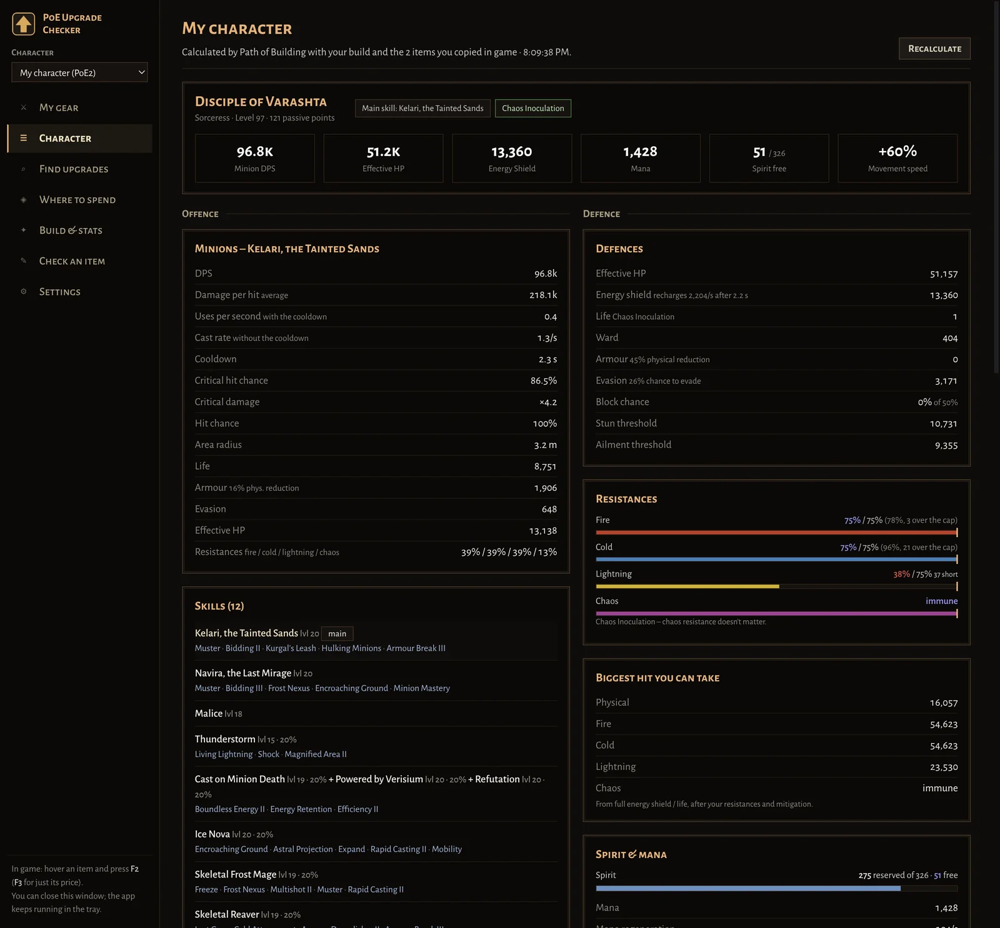
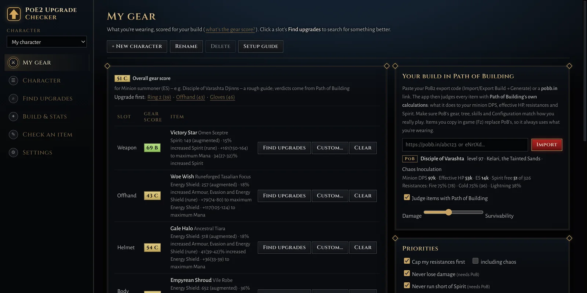

Judged by Path of Building
The app bundles Path of Building's calculation engine and runs it on your build, so verdicts know your passive tree, gems and configuration.
A free overlay for Path of Exile 2 and Path of Exile 1
Hover an item and press F2. The app swaps it into your Path of Building build and tells you what it really does to your damage, effective HP and resistances. Then it finds a better one on the trade site, inside your budget.
Windows 10/11 · Linux (experimental, Steam/Proton) · PoE2, and PoE1 in beta · Free and open source · Updates itself

Paste your Path of Building export or a pobb.in link: Path of Building 2 for PoE2, Path of Building Community for PoE1. Any class, any skill. Your gear slots fill in from it.
The verdict appears next to the item: UPGRADE, SIDEGRADE, LOSES RESISTANCE… with exactly what changes.
One click searches the official trade site, weighted by what each stat is worth to your build, and judges every listing.
An item that caps your lightning resistance but drops your minion damage by 20% isn't an upgrade, however good the numbers look. Items that cost you a resistance or your damage get a red verdict and go to the bottom of every search.

The app bundles Path of Building's calculation engine and runs it on your build, so verdicts know your passive tree, gems and configuration.
Better for my build, same stats or better, craftable bases, or a custom search. Results open in the app with Travel to hideout and a ready whisper.
Prices loot from similar listings: each seller's cheapest, price-fixing baits left out, and a typical price with a range.
Your whole character as Path of Building calculates it: minion DPS, effective HP, resistances against the cap, the biggest hit you can take.
Save a search and get a notification when something new is listed, paced to respect the trade site's limits.
It knows whether you're in PoE2 or PoE1, and keeps characters, league and prices for each. A compact popup, text size and colour-blind options.



Nothing touches the game. It never reads game memory or injects anything. Its only input to the game is one Ctrl+C per key press, the same as copying an item yourself.
Your data stays on your PC. It talks to the official trade site, poe.ninja's prices (cached on this site) and GitHub (for updates). Path of Building runs locally.
Anonymous usage count. So we know how many people use it, the app tells this site a random install number, its version, Windows or Linux, and which game you played that day, a few times a day. No account, items or builds, and no IP addresses are kept. Turn it off in Settings or the first-run guide.
Fan-made. Not affiliated with or endorsed by Grinding Gear Games. Free and open source on GitHub.
In the game, set Options → Graphics to Windowed Fullscreen so the overlay can draw over the game. The first-run guide does the rest.
Stuck or found a bug? Email support@poe2upgrade.com or open an issue on GitHub.